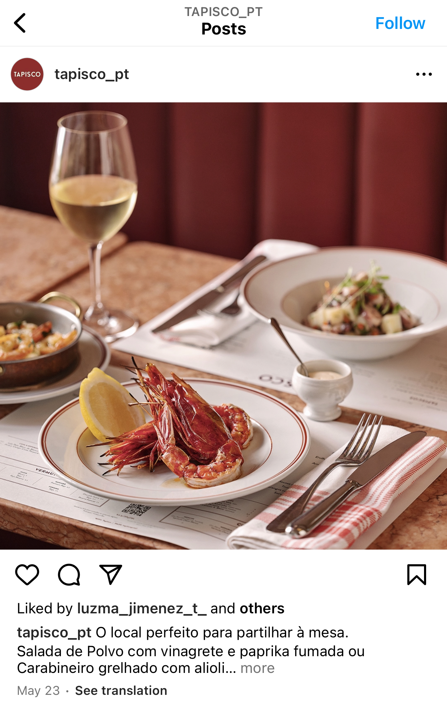
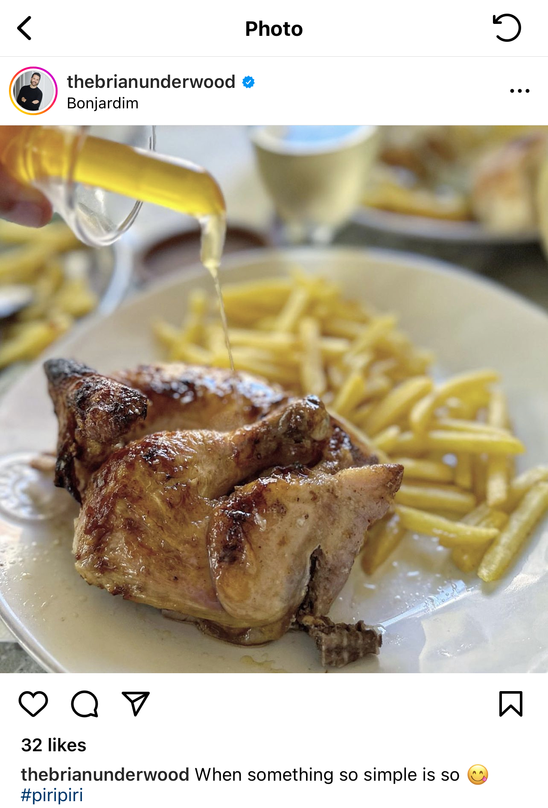
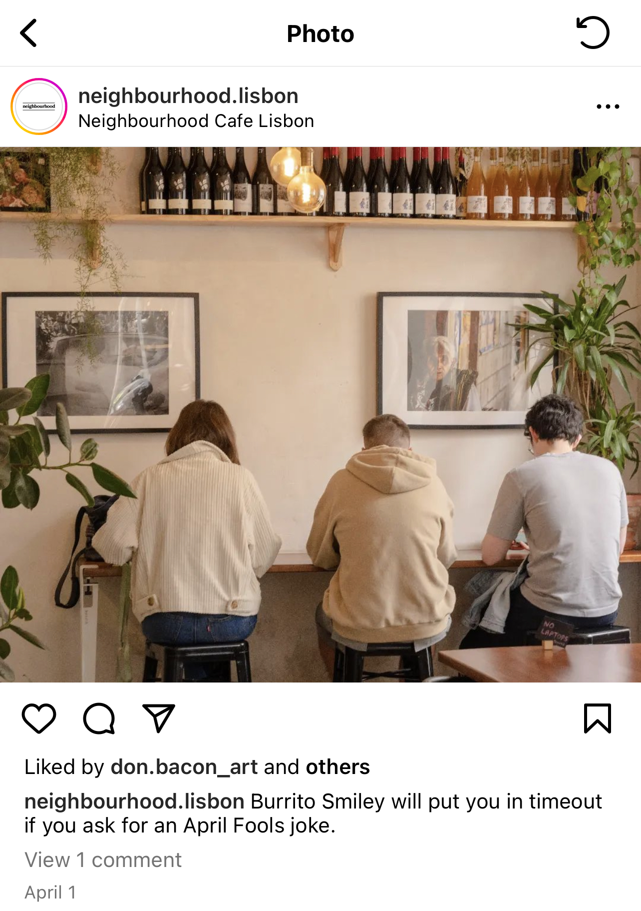
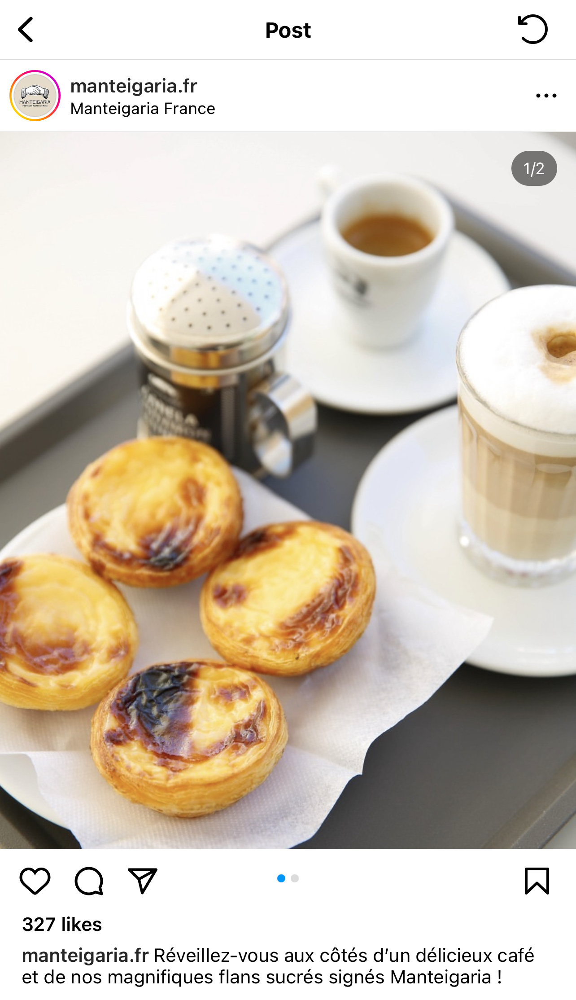
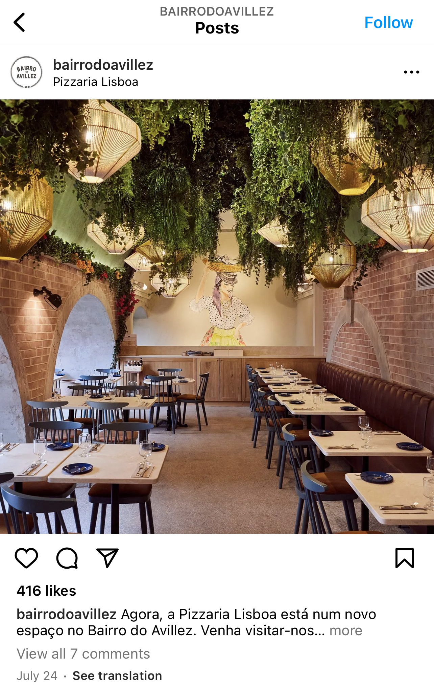
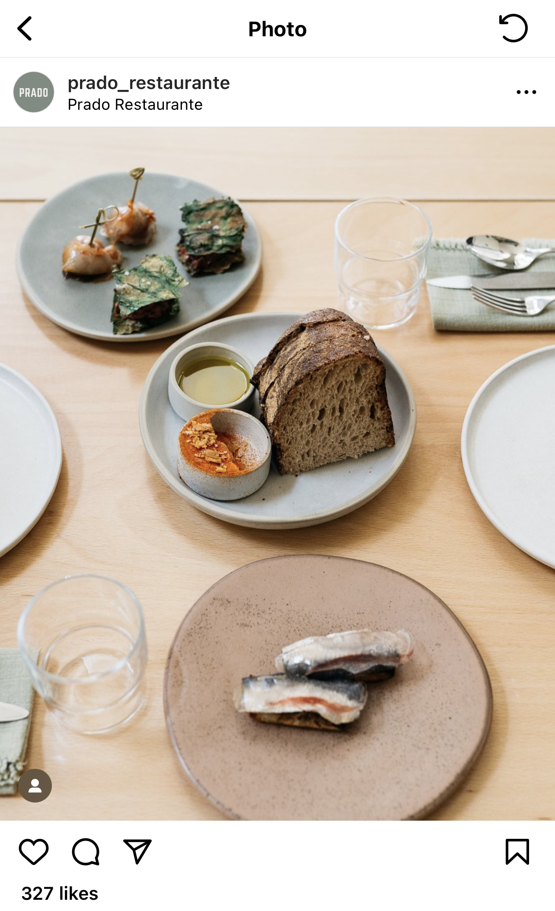

We honestly think we covered the best that Lisbon has to offer in this film.
From traditional Portuguese food, to a tiny 7-seat sushi bar, natural wine to piri chicken we loved every second of this trip.
Go to these places and tell them TOPJAW sent you! With costs everywhere going ballistic, Lisbon was refreshingly low cost and great value everywhere we went.
We cannot recommend it enough!
Tapisco
If on the one hand unity is strength, at Tapisco sharing makes the table. It is through this concept that Chef Henrique Sá Pessoa launches the invitation to enjoy tapas and snacks on both sides of the border with products that were missing in the city of Lisbon.
Price: £££

Bonjardim
Tucked along a small side street, Bonjardim makes its home in an unassuming building in an unassuming corner of a city full of restaurants with staff begging you to come eat with them. No one will chase you down the street with fliers trying to bring you to Bonjardim, but then again, why should they, the smell of the food takes care of that for them.
Despite their seeming lack of initiative, from the moment you seat yourself (as is common practice for outdoor dining in Lisbon) the staff at Bonjardim is ready for you. Service is attentive but not overbearing, but the real experience starts when you receive your food.
Price: £

Ginjinha Sem Rival
Abílio Coelho is a generous man, offering a smile to every customer while serving each of them the most traditional drink in Lisbon: ginjinha. He has spent 44 of his 63 years behind a counter serving the libation.
Ginja Sem Rival, the bar he serves it in, like the best places, is a hole-in-the-wall, and the drink is made in-house.
Price: £
Senhor Uva
Embodying a laid-back and unpretentious neighborhood bistro environment, Senhor Uva is serving creative seasonal sharing plates and pouring the purest selection of terroir-driven wines.
It is the result of the joint visions of Chef Stephanie Audet & Sommelier Marc Singh Davidson to re-create their ideal dining experience.
Price: ££
Clube de Journalistas
In an 18th century building, originally a family mansion, an unpretentious green door is the entrance to the Clube De Journalistas (Journalist's Club) Restaurant. A space open to the public where the crew awaits you with open dishes.
The Clube De Journalistas is a restaurant, with its own rhythm and personality, suited for those who are receptive to having a loose and unengaged experience. We believe in food with intention prepared with emotion.
Price: ££
Neighbourhood
Just off the main streets of downtown Lisbon, since 2019 our purpose has been to provide a laid-back environment, a place where anyone can feel at ease and bring a piece of home wherever they might hail from.
With fresh ground coffee pervading the air alongside a killer playlist, we house multiple homes under the same collection, just like a real a Neighbourhood.
Price: ££

Manteigaria
If you are strolling downtown in Chiado, your place to go is Manteigaria.
What was once part of a butter shop, has reopened as a custard tarts factory – you’ll recognise it by its Art Nouveau façade facing Camões Square. Here the tarts are continuously made in front of you throughout the day, so pop in any time you feel peckish.
Price: £

Taberna in Bairro Do Avillez
Taberna is a must-go-to for lunch, dinner or a snack in the afternoon.
A place where Portugal’s traditional delicacies are reinvented in a laid-back atmosphere,
ideal for those who enjoy hearty food.
Here are our suggestions: cheese and charcuterie by Manteigaria Silva,
tuna steak sandwich with vinegary vegetables, Iberian pork steak,
and, for dessert, salted caramel.
Price: ££

Taberna Sal Grosso
Sal Grosso (“Coarse Salt”) helped to breathe new life into the old Lisbon tradition of enjoying beer, wine and petiscos in a small tavern, its second life – now with new owners and chefs – brings another breath of fresh air to this corner of Santa Apolónia, on the margins of the Alfama neighborhood.
Price: £
Prado
Prado celebrates the best Portugal has to offer, from sea to land.
All our dishes are inspired by and made with national, seasonal, and fresh ingredients.
Basically, if it's not in season, it's not on the table.
To go with the food, our wine list, with only organic, biodynamic, and natural wines.
Price: £££

Monkey Mash
This vibrant, colourful cocktail bar is what you get when you mash together the best of many styles of venue – there’s the playfulness and tropical vibes of tiki, with a clean and bright contemporary feel, not to mention a high-tech element when it comes to the drinks themselves.
Specialising in sugarcane and agave spirits, Lisbon’s Monkey Mash prides itself in using high-tech methods in its lab to create forward thinking, innovative cocktails.
Price: ££
Red Frog
This much-loved Lisbon bar, reminiscent of a New York Prohibition-era speakeasy, is accessed by ringing a bell underneath a red frog fixed to the wall. Once inside the lively, convivial and bohemian lounge, you’ll find bartenders shaking up their signature cocktails to a soundtrack of swing, jazz and funk.
Table service is par for the course at one of the low-slung, candle-lit tables, from which guests order up complex twists on classics, featuring surprising additions such as sea fennel in a gimlet and banana in a Negroni.
Price: ££
The Folks
This place prides itself on its unique approach to food and coffee — a must-visit spot for those who appreciate specialty coffee and breakfast.
Price: ££
O Velho Eurico
When a once beloved tasca was about to close its doors, young chef Zé Paulo Rocha came to the rescue and bought O Velho Eurico back to life.
Serving excellent versions of classic Portuguese grub like arroz de pato, bacalhau à Brás, and their drool worthy juicy lamb croquettes, this spot has a queue before it opens.
Price: £
Omakase Ri
While Lisbon has plenty of top-notch sushi restaurants, it had been lacking a proper omakase (chef’s choice, sushi-only) joint.
Entrepreneur Rishav Verma (Mamasan and Aura Dim Sum Lab) changed that with the arrival of his new Omakase Ri, a seven-seat dining counter in what feels like a Japanese speakeasy in the old Izcalli space in Alcântara.
Price: £££
Musa
MUSA is brewing up a storm in this trend setting Lisbon neighbourhood of Marvila. A great night for beer, food and sounds.
MUSA is a local Lisbon brewery and a great find for those who are looking for something different to do on a night out. MUSA offers a very cool selection of IPA’s, Lagers, Stouts and Ales, all of which are brewed on site plus an amazing selection of bar food.
Price: ££
Tricky's
This spot reflects the new international Lisbon, where people from all over the world came for a trip, fell in love with the city, and never left.
Head here for things like tortellini with Jerusalem artichokes or octopus with chickpeas, and expect a good time—the vibe is relaxed and fun, and the music is cheesy in a way that you’ll actually enjoy.